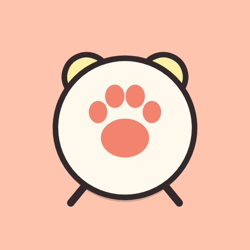

TataZampa
Informativa privacy · Privacy policy
Informativa sulla privacy
In vigore dal 11 novembre 2026 · App: TataZampa (Android) · Sviluppatore: Mirko Del Sette · Contatto: mirkodelsette@yahoo.it
In breve: TataZampa non raccoglie, non invia e non vende nessun dato. Tutto resta sul tuo telefono. L'app non ha nemmeno il permesso di usare internet.
1. Chi siamo
TataZampa è un'app gratuita di sveglie e promemoria per terapie, pappa e altre cure dei tuoi animali, sviluppata da Mirko Del Sette (persona privata).
2. Quali dati usa l'app
Quello che scrivi tu nell'app: nomi e foto degli animali, sveglie, terapie e dosi, orari, storico di cosa è stato dato, note, impostazioni. Questi dati sono salvati solo nella memoria del tuo telefono. Non servono account, registrazione, email o numero di telefono.
3. Cosa NON fa l'app
- Non invia dati a noi o ad altri: l'app non ha il permesso Android di accesso a internet.
- Niente pubblicità, niente statistiche, niente tracciamento, niente profilazione.
- Non usa la tua posizione, i contatti, il microfono o l'identificativo pubblicitario.
- Non vende e non cede dati a nessuno.
4. Permessi del telefono e perché
- Notifiche, sveglie esatte, schermo intero, avvio all'accensione, vibrazione, schermo acceso: per far suonare la sveglia all'ora giusta, anche a telefono bloccato o dopo un riavvio.
- Servizio in primo piano per le sveglie: per far continuare il suono della sveglia finché premi FATTO o Rimanda.
- Stato della rete: lo chiede la parte di Google che legge i QR (solo per sapere se c'è rete). L'app non ha il permesso di accesso a internet, quindi nessun dato può uscire dal telefono.
- Ignora ottimizzazione batteria (lo concedi tu): perché il telefono non blocchi le sveglie delle terapie.
- Fotocamera: solo quando tocchi "Inquadra QR" per leggere il QR di un altro telefono. Le immagini della fotocamera restano sul telefono e non vengono salvate. Per la foto dell'animale scegli tu galleria o fotocamera; la foto resta dentro l'app.
5. Condivisione decisa da te
Se tocchi "Invia file", "QR base" o "QR completo", l'app crea un file o un QR con i tuoi animali e le sveglie. Il file parte solo verso l'app che scegli tu (per esempio WhatsApp, email, Bluetooth): da quel momento valgono le regole privacy di quell'app. Il QR appare solo sul tuo schermo. Noi non riceviamo niente.
6. Backup di Android (Google)
Se sul tuo telefono è acceso il backup di Google, Android può salvare una copia dei dati dell'app nel tuo account Google, per ripristinarli su un telefono nuovo. Questo backup è gestito da Google secondo le sue regole; noi non lo vediamo e non possiamo accedervi. Puoi spegnerlo nelle impostazioni del telefono (Google → Backup).
7. Aggiornamenti
Quando c'è una versione nuova, l'app può chiedere all'app Google Play di mostrarti la finestra "Aggiorna". Lo scambio avviene tra il telefono e Google Play; TataZampa non invia dati.
8. Cancellare i dati
Puoi eliminare un animale da Impostazioni → Profili. Disinstallando l'app, tutti i suoi dati vengono cancellati dal telefono. Il backup Android si cancella dal tuo account Google.
9. Bambini
L'app è pensata per adulti che si prendono cura di animali. Non è rivolta ai bambini e non raccoglie dati di nessuno, quindi neanche di bambini.
10. Modifiche
Se questa informativa cambia, la versione nuova sarà pubblicata su questa pagina con la nuova data.
11. Contatti
Per domande: Mirko Del Sette – mirkodelsette@yahoo.it
Privacy policy
Effective 11 November 2026 · App: TataZampa (Android) · Developer: Mirko Del Sette · Contact: mirkodelsette@yahoo.it
In short: TataZampa does not collect, send or sell any data. Everything stays on your phone. The app does not even have permission to use the internet.
1. Who we are
TataZampa is a free alarm and reminder app for your pets' medications, meals and other care, developed by Mirko Del Sette (private individual).
2. What data the app uses
Only what you type into the app: pet names and photos, alarms, medications and doses, times, history of what was given, notes and settings. This data is stored only on your phone. No account, sign-up, email or phone number is needed.
3. What the app does NOT do
- It sends no data to us or anyone else: the app does not have the Android internet permission.
- No ads, no analytics, no tracking, no profiling.
- It does not use your location, contacts, microphone or advertising ID.
- It does not sell or transfer data to anyone.
4. Phone permissions and why
- Notifications, exact alarms, full-screen alarm, start at boot, vibration, wake lock: to ring the alarm on time, even when the phone is locked or after a restart.
- Foreground service for alarms: to keep the alarm sound playing until you press DONE (FATTO) or Snooze.
- Network state: required by the Google component that reads QR codes (only to know whether a network exists). The app does not have the internet permission, so no data can leave the phone.
- Ignore battery optimization (you grant it): so the phone does not block medication alarms.
- Camera: only when you tap "Scan QR" (Inquadra QR) to read the QR code from another phone. Camera images stay on the phone and are not saved. For the pet photo you choose gallery or camera; the photo stays inside the app.
5. Sharing you choose
If you tap "Send file" (Invia file) or a QR code (QR base / QR completo), the app creates a file or QR code with your pets and alarms. The file goes only to the app you choose (for example WhatsApp, email, Bluetooth); from then on that app's privacy rules apply. The QR code is only shown on your screen. We receive nothing.
6. Android backup (Google)
If Google backup is turned on on your phone, Android may save a copy of the app's data in your Google account, to restore it on a new phone. This backup is managed by Google under its own terms; we cannot see or access it. You can turn it off in your phone settings (Google → Backup).
7. Updates
When a new version is available, the app may ask the Google Play app to show you the "Update" window. This happens between your phone and Google Play; TataZampa sends no data.
8. Deleting data
You can delete a pet in Settings → Profiles. Uninstalling the app deletes all its data from the phone. The Android backup can be deleted from your Google account.
9. Children
The app is meant for adults caring for pets. It is not directed at children and collects no one's data, so no children's data either.
10. Changes
If this policy changes, the new version will be published on this page with a new date.
11. Contact
Questions: Mirko Del Sette – mirkodelsette@yahoo.it